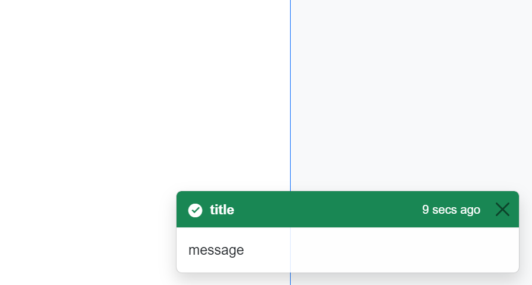

AlertDialog
The AlertDialog class provides a fundamental implementation for displaying dialog boxes, like Toast.
Usage
To use AlertDialog, you need to add a service to your 'Program.cs' file in your Blazor application:
builder.Services.AddScoped<IAlertDialogService, ToasterService>();
Next, in your 'MainLayout.razor' file, add the following line for visualization:
<AXSharp.Presentation.Blazor.Controls.Dialogs.AlertDialog.Toaster />
Now you can use the AlertDialog wherever needed. To utilize the AlertDialog in your views or code-behind file, you must inject the 'IAlertDialogService' service:
[Inject]
private IAlertDialogService _alertDialogService { get; set; }
Then, you can freely use it, for example, like this:
_alertDialogService.AddAlertDialog(type, title, message, time);
Where:
- type: represents the visualization type - Info, Success, Danger, Warning
- title: Refers to the header of your alert
- message: Corresponds to the text in your alert
- time: Specifies the duration in seconds for which the alert will be displayed
RenderableContentControl
To use AlertDialog in a RenderableComponentBase, you need to add the 'AlertDialogService' property with the current AlertDialogService to the 'RenderableContentControl'. You can obtain the AlertDialogService from the injected service.
<RenderableContentControl Context="Vm.Data" Presentation="Display" AlertDialogService="_alertDialogService"></RenderableContentControl>
RenderableComponentBase has the AlertDialogService property, so in any class that inherits from RenderableComponentBase, you can use the AlertDialogService, for example:
AlertDialogService.AddAlertDialog("Success", "title", "message", 30);
Example
